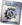
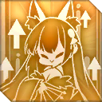
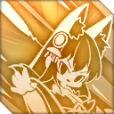

{kind=link}
{kind=link}
{kind=link}
{kind=link}
| 11117 | Nặng | 156 | ||||||||||||||||||
| 479 | 0 | 38 | ||||||||||||||||||
| 234 | 0 | 17 | ||||||||||||||||||
| 33 | 74 | 26 | ||||||||||||||||||
| 0 | ||||||||||||||||||||
Musashi
IJN Musashi CN: 武藏 JP: 武蔵
| Thi công | 05:15:00 |
|---|---|
| Độ hiếm | Siêu hiếm ★★★★★★ |
| Thuộc loại | Chiến hạm |
| Phe phái | Đế chế Anh Đào |
| Thuộc lớp | Yamato |
| Level 125 | 11117 | 479 | 0 | 0 | 234 | 156 | 38 | Nặng | 26 | 74 | 33 | 0 | 17 | ||||||
| Level 120 | 10860 | 473 | 0 | 0 | 230 | 154 | 36 | 26 | 72 | 33 | 0 | 17 | |||||||
| Level 100 | 9833 | 450 | 0 | 0 | 210 | 146 | 31 | 26 | 64 | 33 | 0 | 17 | |||||||
| Base | 1819 | 91 | 0 | 0 | 43 | 57 | 7 | 26 | 22 | 33 | 0 | 9 | |||||||
| Chỉ số từ 0-60 sự liên quan và không nâng cấp sức mạnh giàn khoan Level 100+ chỉ số đến từ 100 sự liên quan và nâng cấp tối đa sức mạnh của giàn khoan | |||||||||||||||||||
| Trang bị | ||||||
|---|---|---|---|---|---|---|
| Chỗ | Hiệu quả | Có thể trang bị | Tối đa # | |||
| 1 | 125% → 155% | BB Pháo chính | 3 | |||
| 2 | 220% → 220% | DD Pháo chính / CL Pháo chính | 3 | |||
| 3 | 100% → 100% | Pháo phòng không | 1 | |||
| Augment | N/A | Pháo nỏ, Kiếm của sĩ quand | 1 | |||
| Unlock conditions | Stat bonuses | Tech Points | |
|---|---|---|---|
| Sưu tập | +2 | 26 | 117 |
| Phá vỡ giới hạn tối đa | 52 | ||
| Level 120 | +1 | 39 | |
| Enhance value | Scrap value |
|---|---|
| 76 0 0 11 | 26  500 30 |
| Limit Break ranks | |
|---|---|
| First | Main gun base +1 / Main gun efficiency +5% |
| Second | Auxiliary gun base +2 / Main gun efficiency +10% |
| Third | Main gun base +1 / Main gun efficiency +15% |
| Skills | ||||
|---|---|---|---|---|
| Violet Lightning Storm CN: 静海惊雷 JP: 紫電雷嵐 |
Khi tàu này bắn Main Guns: 50% (100%) cơ hội bắn một loạt đạn đặc biệt Lv.1 (Lv.10) (Sát thương dựa trên cấp độ kỹ năng); nếu tàu này được trang bị Sakura Empire Main Gun, loạt đạn này sẽ được cải thiện. Loạt đạn đặc biệt này có Tỷ lệ chí mạng tăng 50% và các tia sét từ loạt đạn này gây ra sát thương đặc biệt hiệu ứng xấu đối với kẻ địch bị trúng đòn, tăng 5% sát thương phải chịu trong 8 giây; nếu kẻ địch bị trúng đòn có Giáp nặng, Mô tả trong trò chơi mô tả sai điều này là Phá giáp (Hỏa lực) [skill 1]hiệu ứng xấu thay vào đó được tăng lên 10%.Mô tả trong trò chơi mô tả sai điều này là Phá giáp (Hỏa lực) |
|||
|  | Tempestuous Blade CN: 舞樱刃豪 JP: 赫桜豪刀 |
Tăng FP của tàu này lên 10% (20%) và ACC lên 1% (5%). Nếu tàu này được trang bị Sakura Empire: tăng RLD của tàu này lên 1% (10%) và Sát thương chí mạng của pháo chính lên 5% (15%). | ||
|  | Musashi's Guardianship CN: 蝶守御风 JP: 武蔵の守り |
Khi trận chiến bắt đầu, nếu tàu này KHÔNG phải là tàu soái hạm của bạn HOẶC trạng thái Kiểm soát không phận của bạn không phải là Không có khả năng chiến đấu hoặc Từ chối chiến đấu: giảm 10% (30%) sát thương mà tàu này phải chịu trong trận chiến đó. Nếu tàu này đang nổi, khi hạm đội KHÔNG có tàu này tham gia trận chiến: bắn một loạt đạn hỗ trợ Cấp độ 1 (Cấp độ 10) trong 15 giây và 35 giây sau khi trận chiến bắt đầu (Sát thương dựa trên cấp độ kỹ năng). [Chỉ không trong luyện tập] Khi tàu này có trên 40% HP: cấp trạng thái "Musashi's Guardianship" cho tất cả các tàu khác của Hạm đội chính. Các tàu có trạng thái này:
|
||
⚪
Chỉ duy nhất Cơn bão tím, Bỉ ngạn nở rộ Sự kiện
 |
|---|
| Yamato class IJN Musashi |
| CN: 武藏 JP: 武蔵 |
| General Information | |
|---|---|
| Thời gian xây dựng | 05:15:00 Limited |
| Độ hiếmy | Siêu hiếm |
| Thuộc lớp: | Chiến hạm |
| Phe phái | Đế quốc Anh Đào |
| Stats | |||||||||||||||||||||||||||||||||||||||||||||||||||||||||||||||||||||||||||||||||||||||||||||||||||||||||||||||||||||||||||||||||||||||
|---|---|---|---|---|---|---|---|---|---|---|---|---|---|---|---|---|---|---|---|---|---|---|---|---|---|---|---|---|---|---|---|---|---|---|---|---|---|---|---|---|---|---|---|---|---|---|---|---|---|---|---|---|---|---|---|---|---|---|---|---|---|---|---|---|---|---|---|---|---|---|---|---|---|---|---|---|---|---|---|---|---|---|---|---|---|---|---|---|---|---|---|---|---|---|---|---|---|---|---|---|---|---|---|---|---|---|---|---|---|---|---|---|---|---|---|---|---|---|---|---|---|---|---|---|---|---|---|---|---|---|---|---|---|---|---|
| |||||||||||||||||||||||||||||||||||||||||||||||||||||||||||||||||||||||||||||||||||||||||||||||||||||||||||||||||||||||||||||||||||||||
| Gear |
|---|
| (Mặc định → Phá vỡ giới hạn tối đa) Tối đa # pháo được trang bị |
| BB Main Guns 125% → 155% 3 |
| DD Main Guns / CL Main Guns 220% → 220% 3 |
| Anti-Air Guns 100% → 100% 1 |
| Augmentation Bowgun, Officer's Sword |
| Skills | ||||
|---|---|---|---|---|
|
Violet Lightning Storm
CN: 静海惊雷 JP: 紫電雷嵐 |
||||
| Khi tàu này bắn Main Guns: 50% (100%) cơ hội bắn một loạt đạn đặc biệt Lv.1 (Lv.10) (Sát thương dựa trên cấp độ kỹ năng); nếu tàu này được trang bị Sakura Empire Main Gun, loạt đạn này sẽ được cải thiện. Loạt đạn đặc biệt này có Tỷ lệ chí mạng tăng 50% và các tia sét từ loạt đạn này gây ra sát thương đặc biệt hiệu ứng xấu đối với kẻ địch bị trúng đòn, tăng 5% sát thương phải chịu trong 8 giây; nếu kẻ địch bị trúng đòn có Giáp nặng, Mô tả trong trò chơi mô tả sai điều này là Phá giáp (Hỏa lực) [skill 1]hiệu ứng xấu thay vào đó được tăng lên 10%.Mô tả trong trò chơi mô tả sai điều này là Phá giáp (Hỏa lực) |
||||
Tempestuous Blade
CN: 舞樱刃豪 JP: 赫桜豪刀 |
||||
| Tăng FP của tàu này lên 10% (20%) và ACC lên 1% (5%). Nếu tàu này được trang bị Sakura Empire: tăng RLD của tàu này lên 1% (10%) và Sát thương chí mạng của pháo chính lên 5% (15%). | ||||
Musashi's Guardianship
CN: 蝶守御风 JP: 武蔵の守り |
||||
| Khi trận chiến bắt đầu, nếu tàu này KHÔNG phải là Soái hạm của bạn HOẶC trạng thái Kiểm soát Không phận của bạn không phải là Không có khả năng trên không hoặc Không phủ nhận trên không: giảm 10% (30%) sát thương phải chịu của tàu này trong trận chiến đó. Nếu tàu này đang nổi, khi hạm đội không có tàu này tham gia trận chiến: bắn một loạt đạn pháo hỗ trợ Cấp độ 1 (Cấp độ 10) trong 15 giây và 35 giây sau khi trận chiến bắt đầu (Sát thương dựa trên cấp độ của kỹ năng). [Chỉ không trong luyện tập] Khi tàu này có trên 40% HP: cấp trạng thái "Musashi's Guardianship" cho tất cả các tàu khác của Hạm đội chính. Các tàu có trạng thái này:
|
||||
| Phá vỡ giới hạn | |
|---|---|
| 1st | |
| 2nd | |
| 3rd | |
| Chỉ số tăng thêm | ||||
|---|---|---|---|---|
| Sưu tập | +2 | |||
| Level 120 | +1 | |||
| Điểm công nghệ | ||||
| Sưu tập | 26 | 117 | ||
| Max LB | 52 | |||
| Level 120 | 39 | |||
| Giá trị cường hóa | ||||
| 76 0 0 11 | ||||
| Giá trị tháo dỡ | ||||
| 26 500 30 | ||||
| Ghi chú cách nhận:Quay về trang đầu | ||||||||||
|---|---|---|---|---|---|---|---|---|---|---|
| Thời gian thi công 05:15:00 | ||||||||||
|
||||||||||
| Lịch sử nhận: Có sẵn trong Xây dựng giới hạn trongCơn bão tím, Bỉ ngạn nở rộ sự kiện | ||||||||||